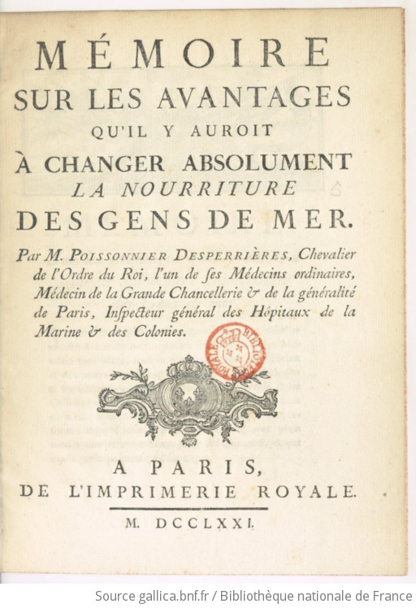

The brothers Pierre-Isaac Poissonnier (1720-1797) and Antoine-Marie Poissonnier Desperrières (1722-1793), like Pierre-François Percy (1754-1825), belonged to a medical and administrative world in which questions of hygiene, diet, disease prevention, and military or naval medicine were becoming matters of state concern.
Pierre-Isaac Poissonnier was appointed, in 1764, inspector general for medicine, surgery, and chemistry in the French Navy and the colonies. He published works intended for the instruction of naval medical personnel and is especially remembered for his experiments with the desalination of seawater. In the 1760s, he promoted a distilling apparatus designed to produce fresh drinking water from seawater by evaporation. Although his claim to priority remains open to discussion, since Jean Gautier had already tested a comparable device earlier in the eighteenth century, Poissonnier's apparatus attracted considerable attention. It was used during Bougainville's expedition of 1766-1769, though its high consumption of fuel and the risks associated with fire on board ship limited its practical value. The Baudin expedition did not carry Poissonnier's machine but was instead equipped with a new galley prototype designed by the citizen Garreau, which drew heated water from the ship's hold.
Antoine-Marie Poissonnier Desperrières served alongside his brother in the administration of naval and colonial hospitals. He also spent several years in Saint-Domingue, where he observed the diseases contracted by travellers and seafarers in tropical climates. In his writings on maritime medicine, he argued that the health of sailors depended not only on treatment after illness, but also on diet, prevention, and the regulation of shipboard life. He recommended reducing the heavy reliance on salted and smoked meats and increasing the proportion of grains, rice, pulses, and other more digestible foods. Following observations comparable to those of the Scottish physician James Lind, Poissonnier Desperrières also stressed the value of acidic fruit juices in preventing scurvy, especially lemon and orange juice, preserved in well-sealed bottles.

Mémoire sur les avantages qu'il y auroit à changer absolument la nourriture des gens de mer, by M. Poissonnier-Desperrières, 1771.
Source: Bibliothèque nationale de France
http://catalogue.bnf.fr/ark:/12148/cb311293781
https://gallica.bnf.fr/ark:/12148/bpt6k6480784g
Despite such recommendations, the medical training received by Péron and the Baudin expedition's medical staff did not yet provide fully effective remedies against the principal diseases of long voyages, especially scurvy and dysentery. Baudin became more clearly aware of the value of lemon juice during the stay at Port Jackson, where he took on board seventy-two bottles before resuming the voyage at the end of 1802. Hamelin likewise recorded that, unlike the rest of his crew, he drank lemon juice and felt its benefits.